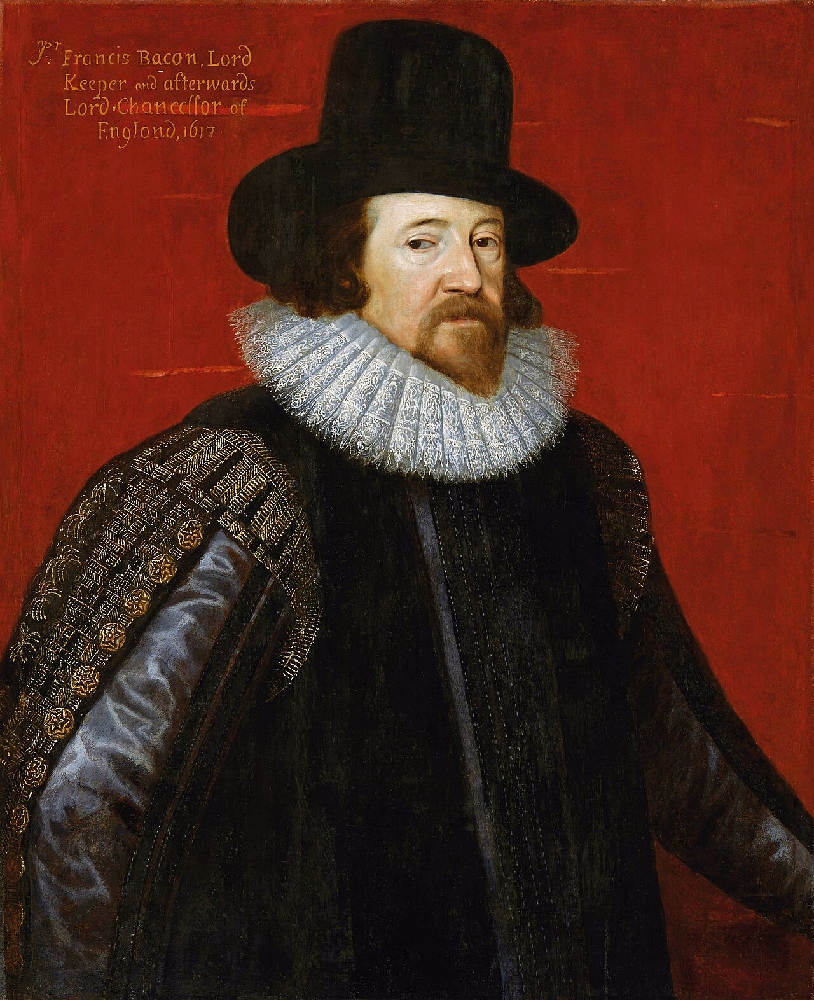
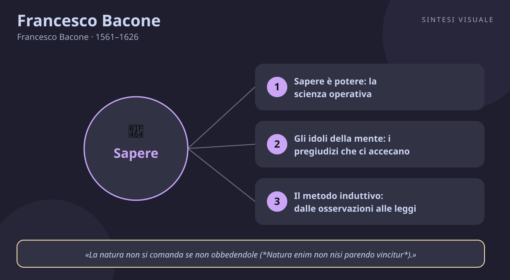

Home / Filosofi / Francesco Bacone

Francesco Bacone
Francesco Bacone · 1561–1626
«Sapere è potere»
- Idoli
- Induzione
- Esperimento
- Progresso
💬La massima
«Sapere è potere: ipsa scientia potestas est.»
— Francesco Bacone, Meditationes Sacrae (1597)
Tre parole latine che hanno cambiato il mondo. Attenzione però: Bacone non sta dicendo «chi sa comanda gli altri», come uno slogan da carrieristi. Sta dicendo qualcosa di più profondo: la conoscenza vera è già di per sé una potenza, perché chi conosce le cause dei fenomeni può produrne gli effetti. Il medico che conosce davvero come funziona il corpo può guarire; chi ignora le cause può solo pregare e sperare. Sapere e potere sono due facce della stessa medaglia.
Immaginala così: la conoscenza per Bacone è come la mappa di una città sconosciuta. Chi non ce l'ha brancola, chiede strada, si perde, dipende dagli altri. Chi ce l'ha non è «più intelligente» in astratto: è più libero, perché può scegliere dove andare e arrivarci davvero. E la mappa non si disegna stando seduti a tavolino a ragionare sul concetto di strada: bisogna uscire, camminare, misurare, sbagliare percorso. Ecco perché per Bacone la scienza deve sporcarsi le mani con l'esperienza: solo la conoscenza nata dall'osservazione della natura dà potere sulla natura. È la frase che apre la porta a tutta la scienza moderna — e anche al nostro mondo di dati, algoritmi e tecnologia.
👤Biografia
Francesco Bacone nasce a Londra il 22 gennaio 1561, in pieno splendore dell'età elisabettiana. Il padre Nicholas è Lord Guardasigilli della regina Elisabetta I, la madre Anne Cooke è una delle donne più colte d'Inghilterra, traduttrice dal latino: il bambino cresce tra libri e corridoi del potere. A dodici anni entra al Trinity College di Cambridge, ma ne esce deluso: gli insegnano Aristotele a memoria, dispute verbali, nessuna osservazione del mondo reale. «Qui si discute, non si scopre», penserà per tutta la vita.
Studia legge al Gray's Inn, diventa deputato, avvocato brillante, consigliere del conte di Essex — che poi tradirà nei processi che lo condanneranno, una delle ombre della sua biografia. Sotto Giacomo I la carriera decolla: procuratore generale, Lord Cancelliere nel 1618, Barone di Verulamio e poi Visconte di Sant'Albano nel 1621. Sembra al vertice del mondo. Ma proprio nel 1621 il Parlamento lo accusa di aver accettato doni (le «mance» allora comuni tra i giudici): confessa con eleganza, viene destituito, multato e brevemente imprigionato nella Torre di Londra. Finisce la politica, comincia la gloria: ritiratosi a vita privata, scrive febbrilmente le sue grandi opere.
Muore il 9 aprile 1626 in un modo che sembra inventato da un romanziere: durante una gita in carrozza con il medico del re, per provare che il freddo conserva la carne come il sale, compra un pollo, lo riempie di neve e lo congela. Prende freddo, si ammala di bronchite e muore. Il filosofo del metodo sperimentale ucciso — si dice — da un esperimento. Ambizioso e cortigiano, vanitoso e geniale, servitore del potere e profeta della libertà attraverso la scienza: tutto Bacone sta in questa contraddizione.
📌Sintesi del pensiero
Bacone vuole rifondare il sapere: basta commentare Aristotele e disputare a parole, bisogna osservare la natura con un metodo nuovo, l'induzione basata su esperimenti e tavole di osservazioni. Prima però bisogna purificare la mente dai pregiudizi — i celebri «idoli» — che ci fanno vedere ciò che vogliamo vedere. Solo una mente pulita e un metodo rigoroso danno una scienza che funziona, e una scienza che funziona dà all'uomo potere sulla natura per migliorarne la vita.
🏛️I temi fondamentali
- Sapere è potere: la scienza operativa. Per Bacone conoscere non significa contemplare le essenze come facevano gli scolastici, ma saper produrre effetti: scaldare, curare, navigare, coltivare. La verità di una teoria si misura dai frutti, dalle «opere» che genera. Esempio concreto: non basta discutere se il calore sia una qualità astratta; chi capisce che il calore è movimento delle particelle può costruire macchine a vapore. È la nascita dell'idea moderna di tecnologia: la scienza che serve la vita umana.
- Gli idoli della mente: i pregiudizi che ci accecano. Prima di osservare il mondo, dice Bacone, dobbiamo pulire le lenti con cui lo guardiamo. Chiama «idoli» quattro famiglie di errori: gli idoli della tribù (difetti comuni a tutti gli uomini, come vedere ordine dove c'è caso), della spelonca (i pregiudizi personali, la nostra «caverna»), del foro (le parole ambigue che ingannano, come «fortuna» o «natura») e del teatro (le filosofie di moda recitate come commedie). Esempio: un tifoso vede sempre l'arbitro contro la sua squadra — idolo della spelonca. Solo riconoscendo questi filtri possiamo osservare davvero.
- Il metodo induttivo: dalle osservazioni alle leggi. Contro la deduzione sillogistica che parte da princìpi generali mai verificati, Bacone propone di partire dai fatti: raccogliere osservazioni in tavole (quando il fenomeno c'è, quando manca, quando varia), scartare le ipotesi smentite ed estrarre pian piano la «forma», cioè la legge. È lento, faticoso, collettivo — un lavoro da squadra, non da genio solitario. Esempio: per capire il calore elenca corpi caldi (sole, fuoco, pepe), corpi freddi simili (luna, ghiaccio) e gradi diversi (ferro tiepido, fiamma viva), finché emerge la legge.
- La natura si vince obbedendole. La natura, dice Bacone, non si comanda con gli ordini né con le belle parole: si comanda solo obbedendole, cioè conoscendone le leggi e usandole a nostro favore. Non puoi ordinare a un fiume di scorrere all'insù, ma se studi l'idraulica puoi costruire dighe e mulini. Esempio quotidiano: l'agricoltore non «comanda» il grano a crescere; rispetta stagioni, terreni e acqua — e proprio così ottiene raccolti abbondanti. Potere vero è collaborazione intelligente, non arroganza.
- La Nuova Atlantide: il sogno del progresso. Nell'utopia incompiuta della Nuova Atlantide, Bacone immagina l'isola di Bensalem governata dalla Casa di Salomone: un istituto di ricerca dove scienziati osservano, sperimentano e mettono le scoperte al servizio di tutti. È il primo sogno moderno della scienza organizzata dallo Stato per il bene comune — l'antenato di università, laboratori pubblici e ospedali di ricerca. Esempio: l'idea stessa che i soldi delle tasse finanzino la ricerca sul cancro viene da qui.
📚Le opere principali
- Saggi (Essays, 1597, edizione ampliata 1625). Tesi centrale: la saggezza pratica per vivere nel mondo — dagli studi alla vendetta, dall'amicizia al potere — in brevi capitoli densi e memorabili. Conta perché è il Bacone più letto e amato: aforismi che si mandano a memoria, modello di prosa inglese moderna e manuale di prudenza ancora attuale.
- Il Novum Organum (Novum Organum, 1620). Tesi centrale: serve un «nuovo strumento» del sapere che sostituisca la logica di Aristotele: la teoria degli idoli e il metodo induttivo per interpretare la natura. Conta perché è il manifesto filosofico della rivoluzione scientifica: il libro che dice agli scienziati come lavorare, da Galileo alla Royal Society.
- L'avanzamento del sapere (The Advancement of Learning, 1605). Tesi centrale: una mappa completa di tutto il sapere umano, con le sue lacune da colmare, dalla storia naturale alla politica. Conta perché fonda l'idea moderna di enciclopedia e di ricerca programmata: prima di scoprire, bisogna sapere che cosa manca.
- La Nuova Atlantide (New Atlantis, pubblicata postuma nel 1627). Tesi centrale: il racconto utopico dell'isola di Bensalem e della Casa di Salomone, dove la scienza organizzata migliora la vita di tutti. Conta perché ispira direttamente la fondazione della Royal Society (1660) e resta il mito fondatore della fiducia moderna nel progresso scientifico.
💬Massime celebri
«La natura non si comanda se non obbedendole (Natura enim non nisi parendo vincitur).» — Novum Organum, libro I, aforisma 3 (1620). Conta perché è il rovescio operativo di «sapere è potere»: il potere sulla natura nasce solo dal rispettarne le leggi.
«Leggere rende completi, conversare rende pronti, scrivere rende precisi (Reading maketh a full man; conference a ready man; and writing an exact man).» — Saggi, «Degli studi» (1597). Conta perché è il suo consiglio pratico più citato: tre attività, tre virtù, un piccolo metodo di autoformazione valido ancora oggi.
«La vendetta è una specie di giustizia selvaggia (Revenge is a kind of wild justice).» — Saggi, «Della vendetta» (1625). Conta perché mostra il Bacone moralista: la giustizia privata deforma chi la esercita, solo la legge incivilisce il risentimento.
⌛Contesto storico
Bacone vive tra il 1561 e il 1626, nel cuore di un'epoca che cambia pelle. Nasce nella Londra di Elisabetta I: un'isola di circa quattro milioni di abitanti che sfida la Spagna di Filippo II, sconfigge l'Invincibile Armata nel 1588 e si apre agli oceani con Drake e Raleigh. È la Londra di Shakespeare — suo quasi coetaneo — del Globe Theatre, della peste che chiude i teatri e delle impiccagioni a Tyburn. Cresce in una società ancora feudale ma già mercantile: la lana, i commerci, le prime compagnie per azioni.
Attorno a lui il mondo del pensiero ribolle. Nel 1543 Copernico ha spostato la Terra dal centro dell'universo; mentre Bacone scrive, Keplero calcola le orbite dei pianeti, Galileo punta il cannocchiale al cielo (1610) e Harvey scoprirà la circolazione del sangue (1628). La Riforma protestante ha spezzato l'unità religiosa: l'Inghilterra anglicana si definisce contro Roma e contro i puritani, e la Bibbia in inglese mette la parola scritta nelle mani di tutti. Nelle università domina ancora Aristotele insegnato in modo scolastico — ed è proprio contro questa fossilizzazione che Bacone si rivolta.
I movimenti che lo nutrono sono l'umanesimo rinascimentale (Erasmo, Montaigne), il ritorno alla natura di Telesio e la nuova arte dell'esperimento di Gilbert sul magnetismo. Quelli che trasmette sono immensi: l'empirismo inglese, l'Illuminismo francese che lo venera nell'Enciclopedia, la Royal Society con il suo motto «nullius in verba» (non credere alle parole di nessuno, verifica), e da lì tutta la scienza organizzata moderna.
🌊L'eredità
Dopo la morte, Bacone diventa il santo patrono della scienza moderna. Thomas Hobbes, che da giovane gli fa da segretario, ne eredita il materialismo e l'idea di una filosofia utile; John Locke e poi David Hume costruiscono su di lui l'empirismo inglese: niente idee innate, tutto viene dall'esperienza. In Francia Diderot e d'Alembert lo mettono in testa all'Enciclopedia come padre spirituale dell'Illuminismo, e Voltaire lo celebra come il legislatore della ragione. La Royal Society di Londra, fondata nel 1660, realizza il sogno della Casa di Salomone: laboratori, esperimenti pubblici, riviste scientifiche. Nell'Ottocento Auguste Comte e il positivismo ne fanno un precursore del culto del progresso; nel Novecento persino chi lo critica gli rende omaggio: Karl Popper demolisce l'induzione baconiana ma parte proprio dal suo problema — come giustificare le leggi ricavate dall'esperienza — e il pragmatismo americano di Dewey riprende l'idea che il vero si misura dalle conseguenze pratiche. Oggi, ogni volta che sentiamo dire «i dati parlano» o «decidiamo sulla base delle evidenze», stiamo parlando la lingua di Bacone — con tutti i suoi pregi e i suoi rischi.
🌍Esempi di oggi
- La riunione decisa dai dati. In ufficio due colleghi litigano su quale pubblicità funzioni meglio, finché uno apre le statistiche delle vendite: vince chi mostra i numeri, non chi alza la voce. È Bacone in azione: l'opinione senza osservazione è un idolo del foro, il dato verificato è potere reale di decidere bene.
- Gli esami del sangue invece del «mi sento». Dire «mi sento stanco, sarà lo stress» è un'ipotesi; fare le analisi e scoprire una carenza di ferro è conoscenza operativa, perché indica la cura. Bacone direbbe: la sensazione è il punto di partenza, l'osservazione metodica è ciò che trasforma il lamento in rimedio.
- Le recensioni prima di comprare. Prima di scegliere un hotel o un telefono, leggiamo decine di recensioni: raccogliamo osservazioni altrui, scartiamo quelle sospette, estraiamo una regolarità. Senza saperlo applichiamo le tavole baconiane — presenza, assenza, gradi — e trasformiamo l'esperienza sparsa di sconosciuti in potere di scelta.
🧠Quiz
1 La massima «ipsa scientia potestas est» compare:
2 Per Bacone gli «idoli» sono:
3 Il metodo che Bacone propone al posto del sillogismo aristotelico è:
4 «La natura non si comanda se non obbedendole» significa:
5 La Casa di Salomone nella Nuova Atlantide è:
Rispondi in chat con es. 1B 2A 3C 4D 5A: correggo e ti do il punteggio!
✅Soluzioni — tocca per vedere
1B – 2B – 3C – 4B – 5B. La formula latina è nelle Meditationes Sacrae del 1597; gli idoli sono i pregiudizi della mente; il metodo è l'induzione sperimentale; comandare la natura richiede obbedirle, cioè conoscerne le leggi; la Casa di Salomone è il grande istituto scientifico dell'utopia.
🔁Ripasso
- Idoli: se sbagli la domanda 2, ricorda le quattro famiglie — tribù (difetti di tutti), spelonca (difetti tuoi), foro (parole ingannevoli), teatro (mode filosofiche). Sono «lenti sporche» da pulire prima di osservare.
- Induzione: se sbagli la 3, ricorda che Bacone non parte dai princìpi ma dai fatti raccolti in tavole, scartando le ipotesi smentite fino alla legge. Lento e collettivo, l'opposto del genio che deduce tutto da solo.
- Casa di Salomone: se sbagli la 5, ricorda Bensalem e la Royal Society: è il sogno di una scienza pubblica e organizzata, non di un mago solitario.
🖼️In un colpo d’occhio

Tocca l’immagine per ingrandirla.